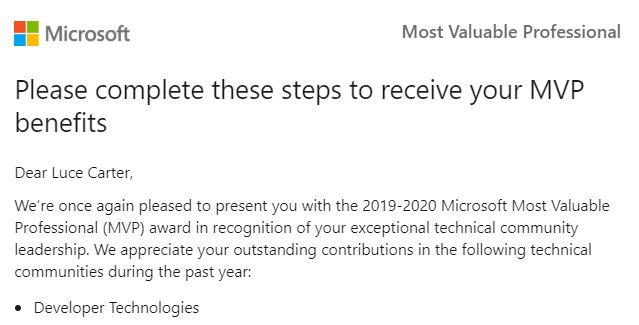
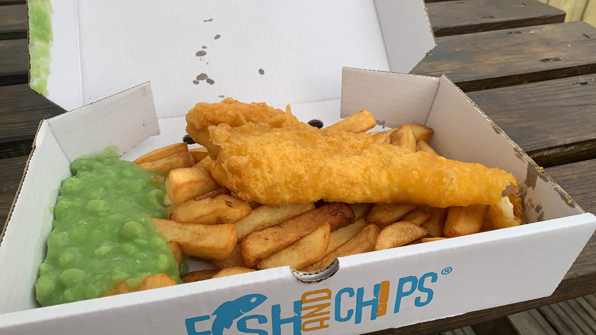

Renewed as a Microsoft MVP for Developer Technologies 2019-20

Last year, on the 1st June 2018 in fact, I was awarded Microsoft MVP status for the first time. A few days after that, with a few days to process the news under my belt, I wrote this blog post discussing how I went from not really doing a lot in the community to MVP within 18 months.
Well I am proud to report I was renewed for 2019-20! In some ways, my array of contributions this year is a bit different to last, so I wanted to take this opportunity to share with you some of what I have been up to this last year and hopefully anyone wishing to become MVP too, can understand a bit of what it takes.
One main difference between this year and last, is what I have been able to get involved in. Being a Microsoft MVP gives you access to a wide range of events and perks which make it so much easier to serve our community.
One of these is free Azure credits. We get $150 a month free credits to use on whatever services we want. This has allowed me to try out a variety of these services I maybe wouldn't have previously. The perfect example for that is this very blog. It is hosted using my free credits, on Azure App Service.
Now I knew about Azure App Service because of various videos, talks and blogs I had read but never actually used it. Now I understand it better than I ever did and can help the community with queries, thanks Microsoft!
Another perfect example is being able to sign an non-disclosure agreement, and gain access to our peers and product groups within Microsoft. If we face an issue in our code or a question from the community we can't answer, we have a whole network we can reach out to for help.
A lot of my contributions that awarded me MVP status at the start were blog post related. I did a lot of blogging and not a lot of public speaking. That has definitely inverted this year.
Whether it be through networking, experience, or simply being known because I am an MVP, my speaking schedule has sky-rocketed. I started out having just one talk in my repetoire, an intro to Xamarin and Cognitive Services but I now have 4 covering a range of topics from Xamarin.Forms to Shell to even F# and Fabulous!
In August 2018, I had my first 45-minute+ talk ever, at my friendly local .NET user group, DotNetNorth. I had been accepted to speak at ProgNet in September in London and wanted a friendly audience to practice my talk on. I had to go over a bit as the pizza was late and they needed me to continue but it was a very successful talk. Part way through I even saw my boss at the time appear at the door to listen. He, and some other colleagues who had come to show their support, were very complimentary which made my first time speaking even more enjoyable.
In September I spoke at ProgNet and that went well. I had a supportive audience and seemed to make a friend for life in one member of the audience, the lovely Layla Porter, a Developer Evangelist at Twilio. First ever conference talk? ✅
As more people either saw me talk or saw me mention on Twitter about speaking, the more I have had fellow community leaders reach out and request I speak. So I have been blessed with adventures to London, Worcester and Brighton all within this year.
I have also had chance to speak at local user groups here in Manchester who are always looking for speakers and it gave me a chance to interact with user groups I maybe otherwise wouldn't have thought to attend, such as groups aimed at functional programming!

Traditional seaside Fish and Chips in Brighton
Being an MVP has also meant I have had chance to help out the community when requested by Microsoft. In January I was asked to speak at NDC London as they wanted a mobile track, so while there I helped man the Microsoft stand for the morning. I got to hear great attendee stories, answer questions and acquire some awesome socks! Plus seeing fellow MVP's I haven't seen since before I was awarded; such as Dave Evans and Garry Whittaker, two fellow Xamarin experts here in the UK.
The cut off point for contributions was March 31st so the Community Program Manager team at Microsoft who decide renewals, have time to evaluate everyone before the 1st of July announcement. This means that some of the fun stuff I have done like Microsoft Insider Dev Tour doesn't count until they look to renew for 20-21 but it is still something I got chance to do because I am an MVP so I am very grateful!
I also got some other slightly more unusual 'side hustles' after becoming an MVP. One perfect example is that I am the official "Editor and Content Producer" for Soundbite.FM, the podcast network behind Merge Conflict, Coffeehouse Blunders, and Nintendo Dispatch. Most people will know MergeConflict as it is a fantastic mobile development podcast by James Montemagno, Principal Program Manager for Mobile Development at Microsoft, and Frank Krueger, the genius behind Sqlite-net, Continous, Calca and iCircuit.
The job title sounds fancy, but what it really means is that I make sure that all blog posts written on montemagno.com and all episode descriptions on all the soundbite.fm podcasts, are free of typo's and grammar mistakes, ensuring that anyone with Dyslexia or requiring a screen reader, has the best chance possible to join in. Plus I can most definitely call James and Frank good friends of mine, which is insane when you think the first time I saw them both in the flesh last year I got a bit star struck!
So if the theme for 2018-2019 was blogging, this year is definitely speaking! If you are wanting to become an MVP yourself, I hope this post helps you see that you can get involved in a wide variety of things. Love what you do? Try and help the community as much as possible? Share knowledge to anyone that will listen? Educate people on inclusion including accessibility and neurodiversity? It all counts!
Sadly I didn't make it to MVP Summit this year as it is held in Redmond/Bellevue and hotels are mega expensive! My employer doesn't do any Xamarin work and we had a travel ban at the time but watch this space for next year!
Thank you to Claire Smyth, CPM for MVP's in the UK&I for renewing me for this year. Thank you to my fellow MVP's for making it so great being part of the community. Thank you to my friends and family who put up with me either barely being home or being constantly busy. Most of all thank you to everyone in the community. Without you I wouldn't have an audience to share my love of Xamarin with ❤️.